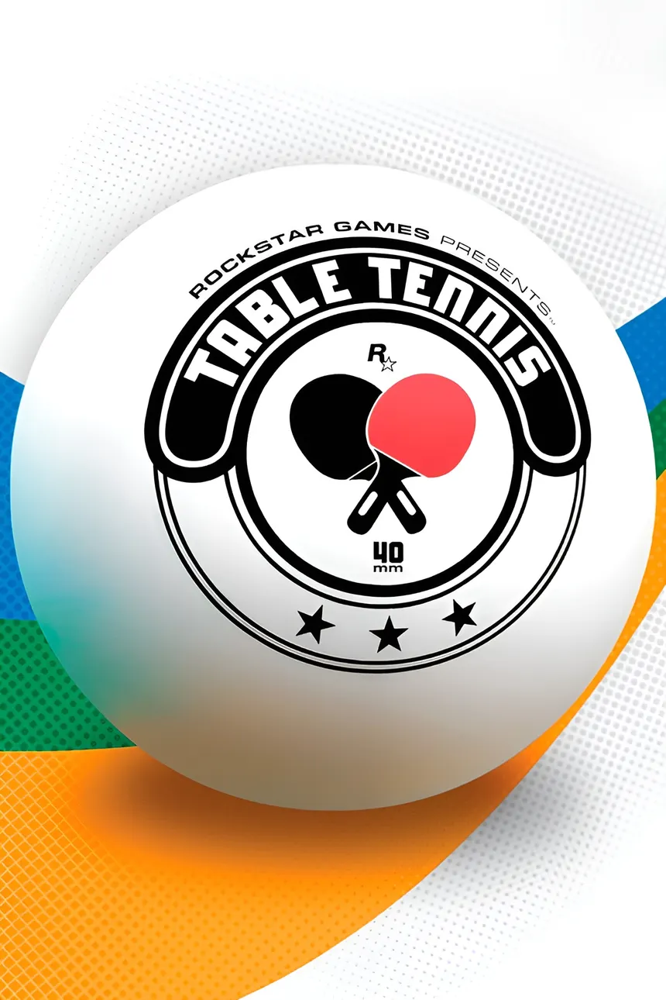
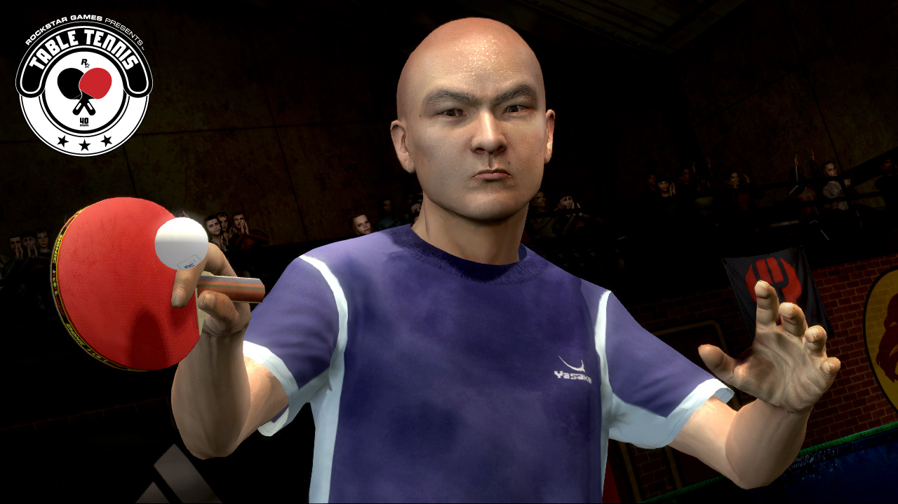
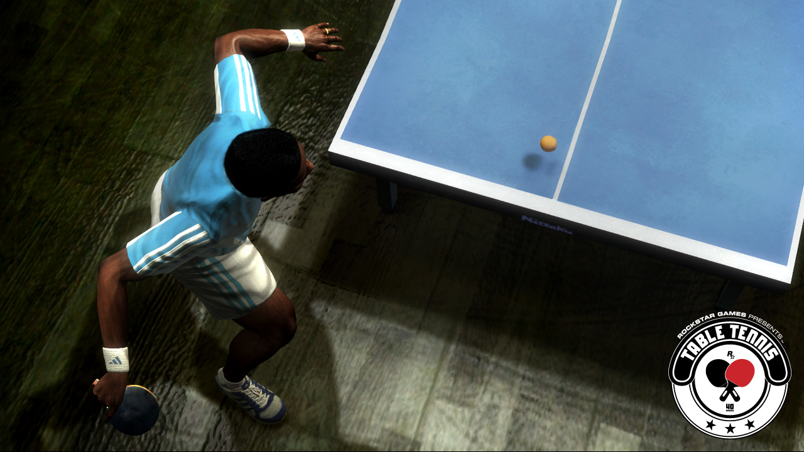
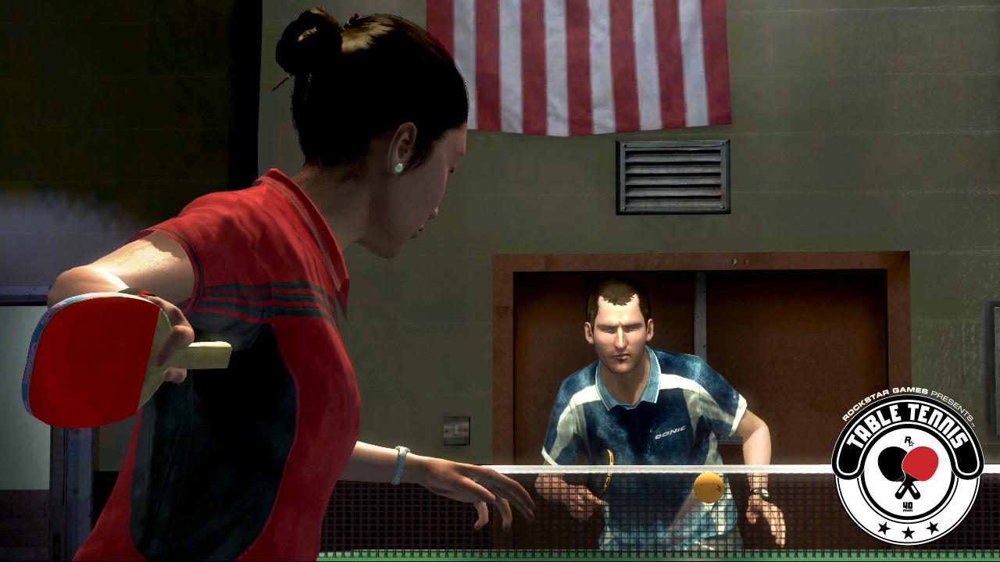
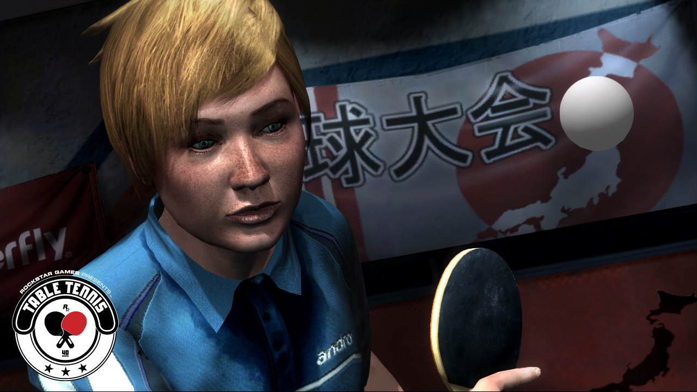

Rockstar Games Presents Table Tennis

Descripción
Rockstar Games Presents Table Tennis nos trae toda la emoción del tenis de mesa en un videojuego que apuesta por el realismo y la precisión.
Podremos elegir entre once personajes diferentes, cada uno con su propio estilo de juego, y competir en distintos modos y escenarios. Para conseguir la victoria tendremos que dominar todo tipo de golpes, desde remates potentes hasta golpes con efecto y tiros precisos.
El juego destaca por su motor de físicas, que busca recrear el comportamiento real de la pelota y ofrecer partidos intensos en los que nuestros reflejos y habilidad serán fundamentales.
Capturas del videojuego




Información del videojuego
| Desarrollador | Plataforma | Fecha de lanzamiento |
|---|---|---|
| Rockstar San Diego | Xbox One, Xbox 360, Wii | 23 de mayo de 2006 |
Opinión personal
¿De verdad he jugado a este juego? Pues sí, y la verdad es que no me arrepiento.
A ver, estamos ante un juego sin más, que cumple perfectamente con lo que pretende: ofrecer una experiencia de ping-pong bien hecha y con varios niveles de dificultad. No tiene mucho más misterio, pero tampoco necesita tenerlo.
Lo que sí me sorprende es que Rockstar nunca llegara a incorporar una mecánica de ping-pong como esta en alguno de sus GTA. Estaría bastante bien poder echar unas partidas mientras recorremos la ciudad y, quién sabe, ojalá en el próximo GTA incluyan un minijuego de ping-pong tan bien trabajado como este.